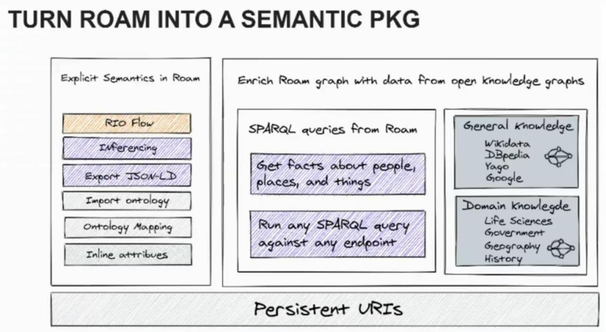
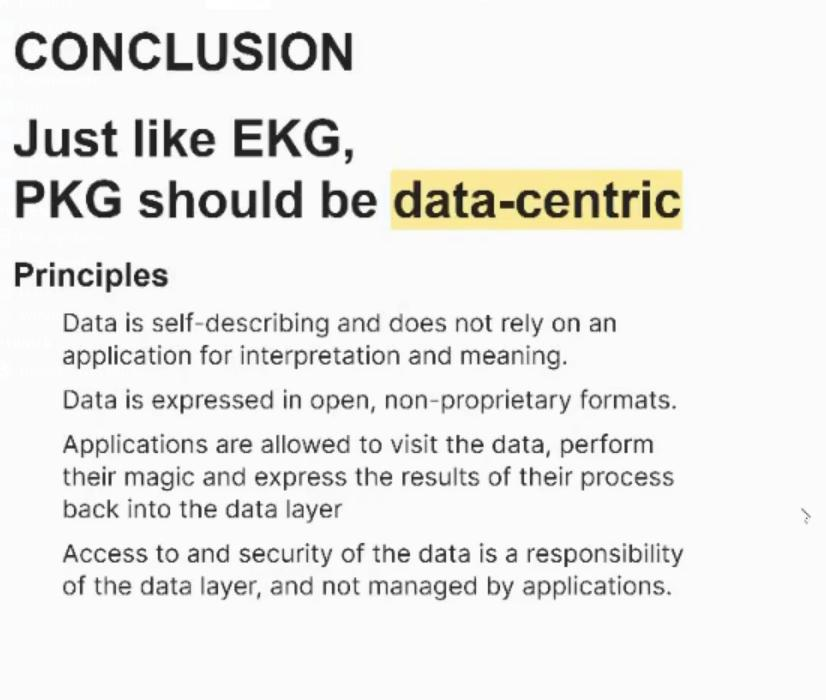

Semantic Hacks for Roam
Table of Contents
A Presentation on Personal Knowledge Graphs. Talks about notetaking.
1. Software
- Kanopi
- Codex
- Roam
- Athens
- Logseq
- Obsidian
- Hypernotes
2. Relationship between blocks instead of just links
- childOf
- categoryOf
- instanceOf
- …
3. Turn Roam into a Semantic PKG

Figure 1: Turn Roam into a Semantic PKG
- SPARQL to retrieve information
- Link your PKG with open knowledge graphs 00:14:35
4. PKG should be Data Centric
00:30:00
- Data is self-describing and does not rely on an
application for interpretation and meaning.
- Data is expressed in open, non-proprietary formats.
- Applications are allowed to visit the data, perform their magic and express the results of their process back into the data layer
- Access to and security of the data is a responsibility of the data layer, and not managed by applications.
